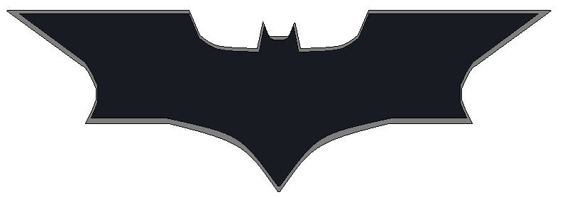

Ejercicios de jQuery basados en Batman
Historia de Batman para practicar jQuery
En Gotham City, Batman se enfrenta a una serie de desafíos mientras
intenta detener a El Joker y su ejército de villanos. Para resolver
estos problemas, Batman utiliza la tecnología avanzada de la
Batcomputadora y otros gadgets. Pero esta vez, necesita tu ayuda
para manipular diferentes elementos en su centro de operaciones para
mantener todo bajo control.
Ejercicio 1: Cambiando el atributo de la Batseñal

Ejercicio 2: Actualizando el contenido del monitor de la
Batcomputadora
Escaneando...
Ejercicio 3: Cambiando el mensaje en la pantalla del Batmóvil
Estado: En espera
Ejercicio 4: Activando el modo sigiloso
Batman está listo.
Ejercicio 5: Desactivando el modo sigiloso
Batman está listo.
Ejercicio 6: Alternar el modo detective de Batman
Batman está en modo normal.
Ejercicio 7: Añadiendo un nuevo villano a la lista de enemigos
Ejercicio 8: Añadiendo a Catwoman al inicio de la lista de
aliados
Ejercicio 9: Insertando un aviso antes del Batordenador
Monitor principal activo
Ejercicio 10: Agregar una alerta después del Batordenador
Monitor principal activo
Ejercicio 11: Limpiando la lista de enemigos capturados
Ejercicio 12: Eliminando un gadget del inventario
- Batarang
- Cinturón de herramientas
- Batimóvil
Ejercicio 13: Cambiando el atributo href de un enlace a la
Batcave
Entrar a la Batcave
Ejercicio 14: Insertando un nuevo reporte en la Batcomputadora
No hay reportes nuevos.
Ejercicio 15: Cambiando el texto de alerta del Batmóvil
Alerta: Sin problemas.
Ejercicio 16: Añadiendo una advertencia en el inicio del
informe
El escaneo de seguridad ha comenzado.
Ejercicio 17: Alternando la clase "seguro" en el informe de
seguridad
Todo seguro en Gotham.
Ejercicio 18: Insertando un aviso antes de la lista de aliados
Ejercicio 19: Insertando una nota después de la lista de
gadgets
Ejercicio 20: Eliminando un aliado de la lista